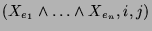
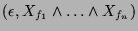
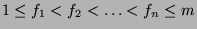
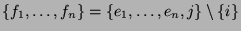
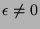
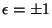
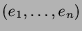
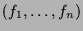

Usage
(s, q) := replace(p, i, j)
Signature
replace: (%, MachineInteger, MachineInteger) (MachineInteger, %)
| Parameter | Type | Description |
|---|---|---|
| p | % | An exterior product |
| i,j | MachineInteger | Indices |
Description
replace  returns  where  and  if . In that case  is the sign of the permutation needed to get from  withreplaced by to .